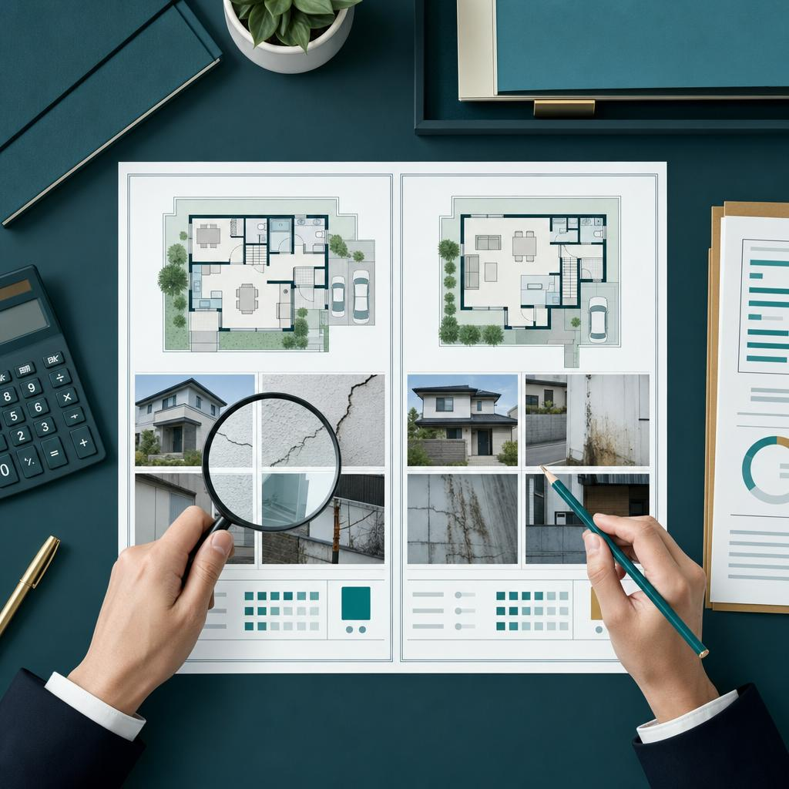

売却不動産コンサルティング
相場、物件条件、売却時期を整理し、価格を下げる前に検討できる選択肢をつくります。
費用・対応範囲・必要期間は物件と相談内容により異なります。条件を確認し、事前にご案内します。
相場、物件条件、売却時期を整理し、価格を下げる前に検討できる選択肢をつくります。

希望条件だけでなく、資金計画、将来の売却や管理まで含めて購入判断を支援します。

一棟管理、賃貸募集、空室対応など、保有不動産の運用を支えます。
利回りだけに頼らず、立地、運営状況、修繕、出口戦略を含めて検討します。

住まいと資産全体のつながりを整理します。ファイナンシャルプランナー相談は無料です。
権利、税務、管理、売却を整理し、必要に応じて専門家と連携します。空き家買取は国道16号線内側エリアを取り扱っています。
全国の収益不動産買取を取り扱っています。未公開物件を含む相談にも対応します。
戸建て・アパートの建築、既存物件のリフォーム・リノベーションを取り扱います。
海外不動産を含む各種不動産コンサルティング。最新の取り扱い状況はお問い合わせください。
目的、期限、背景を確認します。
CONSULT現地、市場、法令、権利を確認します。
RESEARCH複数の選択肢を条件ごとに比べます。
STRATEGY決めた方針に沿って手続きを進めます。
ACTION状況を伺い、必要な相談テーマから整理します。